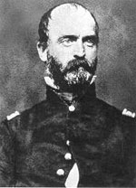

|

|

|
|
|
Confederate general Lewis Addison Armistead was born on
February 18, 1817, in New Bern, North Carolina. His parents
were army engineer Walker Keith Armistead and Elizabeth
Stanly. Raised on his family's farm near Upperville,
Virginia, Armistead entered West Point in 1834, but was
expelled in 1836 for rowdy behavior. Through his father's
connections, he joined the 6th U.S. Infantry as a Second
Lieutenant in 1839, serving in Florida and the west. He
fought in the Mexican War, and was promoted for his bravery
at the battle of Churubusco in 1847. After the war,
Armistead was assigned to frontier duty.
Armistead's personal life was marked by tragedy. In
1844, he married fellow Virginian Cecelia Lee Love, who bore
him a son and a daughter. The daughter and Cecelia both
died in 1850. In 1853, Armistead married a Virginia widow,
Cornelia Lee Taliaferro Jamison. An infant son died in 1854
and Cornelia succumbed to cholera in 1855. Armistead's
surviving son, Walker Keith Armistead, served as his
aide-de-camp during the Civil War.
Stationed in the far west in 1861, Armistead resigned
from the army and returned to Virginia to fight for the
Confederacy. Appointed as colonel of the 57th Virginia
Infantry in 1861, Armistead was quickly promoted to
brigadier general. He saw significant action in the battles
of Seven Pines and Malvern Hill, and was wounded at
Antietam.
Armistead's heroism at Gettysburg, where his brigade
fought in Pickett's Division, became legendary. Leading his
brigade on foot during Longstreet's Assault on July 3, 1863,
Armistead held his hat aloft on his sword for his men to
follow. As the remnants of Pickett's Division reached the
Federal position on Cemetery Ridge, Armistead shouted, "Come
on boys, give them the cold steel. Who will follow me?"
Mortally wounded, his final words were addressed to his
close friend, General Winfield Scott Hancock: "Say to
General Hancock for me that I have done him and you all a
grievous injury for which I shall always regret."
Source: Joan Waugh, ed., Facts on File Encyclopedia of American
History: Civil War and Reconstruction, 1856 to 1869 (New York: Facts on
File, 2003), 15.
|